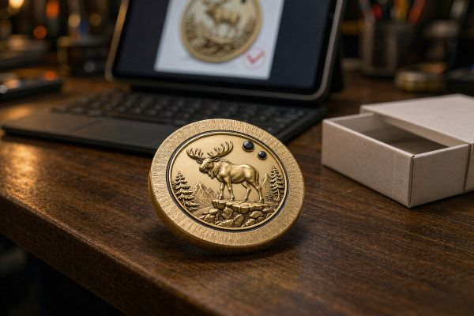
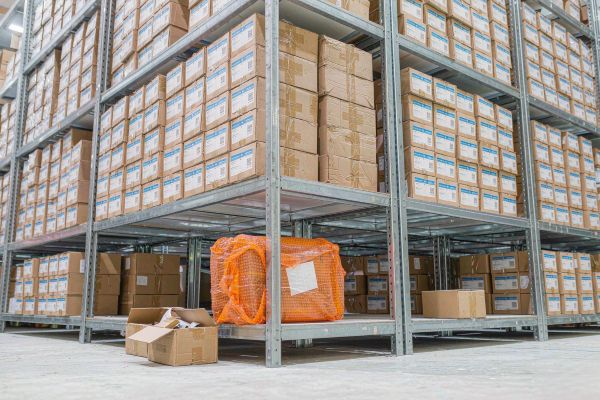

Why Minimums Exist: Setup Cost Arithmetic
A minimum order quantity is not a popularity contest. It is arithmetic. The expensive part of making a coin is not the coin — it is everything that has to happen before the first piece is struck. The die has to be cut, the machine has to be calibrated to it, colors have to be matched, and someone has to inspect the first article against the proof. None of that scales with how many coins you order.
So a run of ten coins carries the same setup bill as a run of a thousand. Divide that bill by ten and each coin quietly absorbs a large slice of it. Divide it by a thousand and it nearly disappears. The minimum is the point at which the supplier can quote a number that still makes the run worth turning the line on for.
This is the same reason a print shop charges a setup fee regardless of copies. The machine does not care whether you print ten wedding invitations or a thousand — the plates and the calibration are paid once. Coins behave identically, just with more steps.
| Order Size | Share of Fixed Setup Borne by Each Coin | What It Feels Like to Buy |
|---|---|---|
| 1 piece | 100% of the setup, on one coin | Highest per-coin cost by far; quality is identical |
| 10 pieces | Setup split across ten units | Still expensive per coin, but a tenth of the single-coin hit |
| 50–100 pieces | Setup now a small fraction per unit | The common floor where most suppliers quote comfortably |
| 500+ pieces | Setup nearly invisible per unit | Bulk economics take over; per-coin cost flattens |
If you want the longer version of how those fixed costs stack against per-piece costs, our guide to what drives challenge coin pricing walks through it piece by piece.
What Changes When You Order 1, 10, or 100
The instinct is to assume the coin gets cheaper because you ordered more. That is only half true. What actually changes is how the fixed cost is distributed — not the coin itself.
Order one coin and you pay full tooling and setup for a single unit. The coin is every bit as well made as the thousandth in a bulk run; you are simply absorbing the entire setup bill alone. Order ten and that bill is shared ten ways. Order a hundred and it is shared a hundred ways, which is roughly where the price curve starts to behave like most buyers expect.

Three things stay the same at every quantity: the metal, the enamel, and the plating process. Three things change: how thinly the setup spreads, how much per-piece labor benefits from repetition, and how much freight matters relative to the coins themselves. On a small order, freight is a rounding error. On a large one, it becomes a line item worth negotiating.
- One coin: full setup on a single unit, fastest to approve, zero inventory risk.
- Ten coins: setup shared, still pricey per unit, good for a small leadership group.
- One hundred coins: setup becomes a minor per-unit cost, the practical entry point for most clubs and units.
No-Minimum vs. Bulk: Which Is Actually Cheaper Per Coin
Per coin, bulk always wins. That is not a trick — it is the arithmetic from the first section. A no-minimum supplier is not magically making setup free; they are simply letting you pay it on the few coins you actually order.
The honest comparison is total cost for the quantity you truly need. If you need thirty coins, a no-minimum order for thirty is almost always cheaper in total than being forced to buy a hundred to hit someone's floor. You pay for what you use. If you need a thousand, then a bulk quote that folds the setup into the unit price will beat a no-minimum quote priced at the same small-run rate.
| Scenario | No-Minimum Route | Bulk Route (with a floor) |
|---|---|---|
| You need 30 coins | Pay for 30 at small-run pricing — total is what you use | Forced to buy 50–100; you pay for coins you did not need |
| You need 500 coins | Small-run rate across 500; setup still on every unit | Setup folded into unit price; lower total landed cost |
| Demand is unknown | Order a few, learn, reorder later | Risk of over-ordering and holding dead inventory |
Where no-minimum genuinely saves money is avoiding the trap of buying a quantity you cannot use. A floor that pushes you from "what I need" to "what they require" is a cost in its own right, paid in coins you store instead of coins you hand out.
When a Small Test Order Is the Smart Move
A small or single-piece order is not a consolation prize. There are clear moments when it is the disciplined choice rather than the expensive one.
First, when you are proving a design. Artwork that looks perfect on a screen can read differently in stamped metal — line weights, small text, and color separation all behave differently once they are physical. A single coin lets you hold the real object, photograph it, and fix problems before you commit to five hundred.
Second, when the recipients are few. An executive gift, a founder's keepsake, a retirement presentation to one person — these do not become cheaper by ordering more, because the extra coins would never be given to anyone.
Third, when demand is genuinely unknown. Ordering a small batch to test response, then scaling, protects you from the larger mistake of over-ordering. Our companion piece on the challenge coin mold fee explains why reusing the original die on the reorder keeps the second run cheap.

How to Scale From a Sample Run to a Full Unit Order
Scaling is where no-minimum production pays off a second time — if you set it up correctly. The goal is to move from one approved coin to a full run without paying for the same tooling twice.
The mechanism is the die. Once your design is cut into steel, that die is the thing that makes every subsequent coin. A maker who stores it can run your reorder without re-cutting. Ask, in writing, how long the die is kept — common practice is two to three years — and place the larger order inside that window.
Two practical moves make the scale-up smooth:
- Lock the artwork before you scale. Changes after the die exists mean a new die, which means a new tooling charge. Approve the sample fully — color, text, edge, plating — then reorder against it.
- Treat the sample as the proof, not a separate step. A no-minimum single coin and a pre-production sample are the same object. Use it to sign off, then order the volume against the same approval.
When you do scale, the math shifts in your favor: the full run carries only per-piece costs plus any fresh setup, and production efficiency at volume trims the unit price further. The sample's higher per-coin cost was the tuition; the full run is the payoff.
Need Just a Few Coins — or a Few Thousand?
We run no-minimum orders and bulk runs on the same line, so your sample and your full order share one die. Get a free quote and digital proof in 12 hours.
Get Free QuoteFrequently Asked Questions
What is a challenge coin minimum order quantity (MOQ)?
A minimum order quantity is the smallest number of pieces a supplier will produce in one run. It exists because tooling, die setup, color matching, and first-article inspection cost the same whether you make ten coins or a thousand, so below a certain quantity the job is uneconomic to schedule. MOQs commonly sit at 50 to 100 pieces for US-facing suppliers, while factory-direct makers can often produce a single coin.
Why do most suppliers set a 50-piece minimum?
Because the fixed setup cost does not shrink with quantity. Below roughly 50 pieces, the per-coin share of tooling and setup climbs to a point where the order is barely worth scheduling, and the price becomes uncomfortable for both sides. Fifty to a hundred pieces is the range where most suppliers can quote a number that still makes the run viable.
Can I order just one challenge coin?
Yes, from a factory-direct maker. A single coin is produced by running the same die and finishing steps for one unit instead of a hundred. You still pay the fixed tooling and setup, so the per-coin cost is far higher than a bulk run, but the coin itself is identical in quality. It is the right choice for a proof, a personal keepsake, or an executive gift.
Is no-minimum ordering more expensive per coin?
Per coin, yes — often substantially — because the fixed costs land on very few units. A single coin can cost several times the per-piece price of a 500-piece run. The trade-off is flexibility: you are not forced to buy a quantity you do not need, and you avoid tying up budget in inventory you may never use.
When does a small or no-minimum order make sense?
When you need to prove a design before committing, when the recipients are a handful of people, when the occasion is personal rather than unit-wide, or when you simply cannot predict demand yet. A small test order de-risks the artwork and the relationship before you scale to a full production run.
How do I scale from a sample run to a full unit order?
Keep the same approved artwork and die. Reusing existing tooling means you skip the mold fee on the reorder, so the full run only carries per-piece costs plus any new setup. Confirm with the maker how long the mold is stored, then place the larger order inside that window to avoid paying for the same tool twice.
Does ordering more always lower the per-coin cost?
Almost always, because fixed costs spread across more units and production runs more efficiently at scale. The two things that can erode the saving are freight, which grows with weight and volume, and per-piece packaging upgrades. Compare the total landed cost at your real quantity rather than the headline per-piece number.